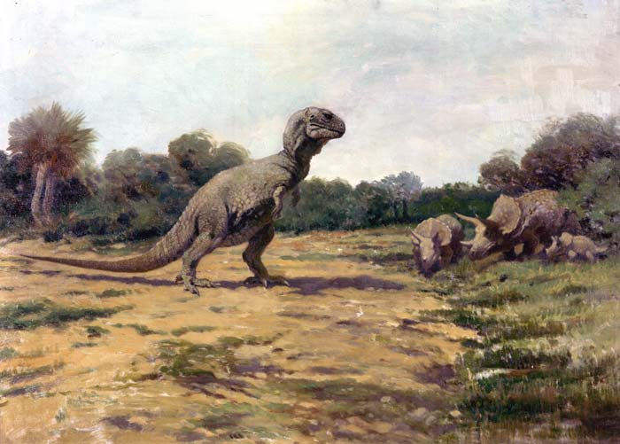

Tyrannosaurus

Painting by Charles R. Knight
Tyrannosaurus (/tɨˌrænəˈsɔrəs/ or /taɪˌrænəˈsɔrəs/; meaning “tyrant lizard”, from Greek tyrannos (τύραννος) meaning “tyrant,” and sauros (σαῦρος) meaning “lizard”) is a genus of coelurosaurian theropod dinosaur. The species Tyrannosaurus rex (rex meaning “king” in Latin), commonly abbreviated to T. rex, is a fixture in popular culture.
“I have a big head and little arms.”
—T-Rex, Meet the Robinsons
History
Teeth from what is now documented as a Tyrannosaurus rex were found in 1874 by A. Lakes near Golden, Colorado.Henry Fairfield Osborn, president of the American Museum of Natural History, named Tyrannosaurus rex in 1905. The full binomial therefore translates to “tyrant lizard the king” or “King Tyrant Lizard”, emphasizing the animal's size and perceived dominance over other species of the time.
Tyrannosaurus rex, Palais de la Découverte, Paris
In popular culture
Since it was first described in 1905, Tyrannosaurus rex has become the most widely recognized dinosaur species in popular culture. It is the only dinosaur that is commonly known to the general public by its full scientific name (binomial name) (Tyrannosaurus rex), and the scientific abbreviation T. rex has also come into wide usage. Robert T. Bakker notes this in The Dinosaur Heresies and explains that a name like “Tyrannosaurus rex is just irresistible to the tongue.”
Sources